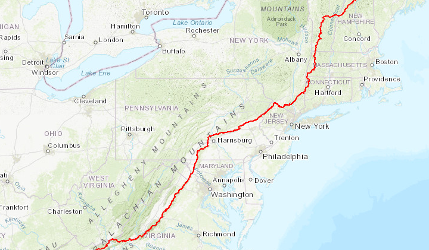
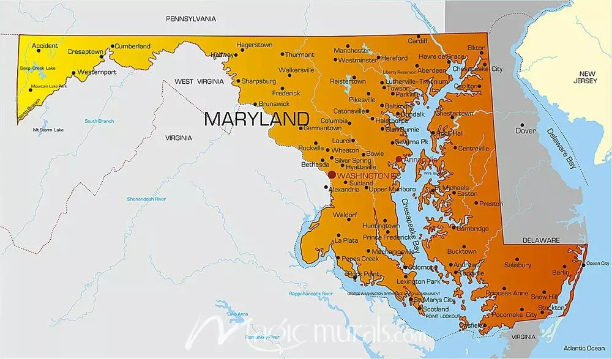

APPALACHIAN TRAIL

CONTINUE TRAVELING...
Halfway through the trail, nearing the nations capital and several large cities on the East Coast.
The hoping thoughts of failing to encounter anyone else scares you. You have had no trouble
traveling thus far on the trail.
Continue on this trail until you reach New York.
Finding shelter is no issue as several cabins/homes reside within the trail.
You have become and avid hunter, setting small traps for meals.

WASHINGTON D.C.
The nations capital. The home of several politicians including the president.
This could not only be an opportunity to seek answers, but maybe correct shelter and food
with some of most important people in the country.
This could lead a path down some major East coast cities, providing answers, shelter,
and hope.